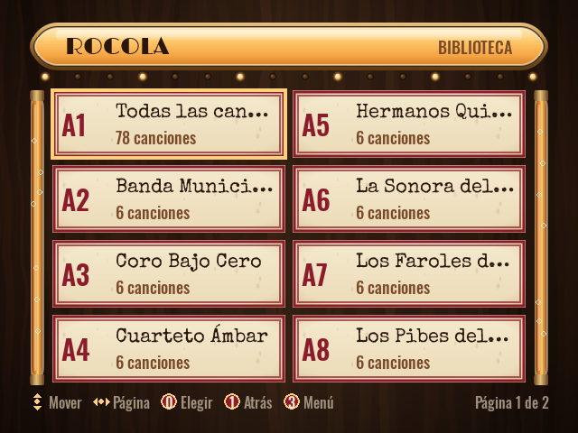
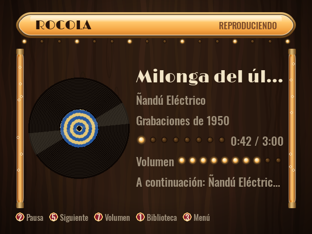

Convertí una computadora de escritorio vieja en una rocola con un solo pendrive.
Qué es
Arrancás una PC vieja desde el pendrive y aparece una rocola a pantalla completa, lista para sonar. Cuando lo decidís, un instalador guiado la copia al disco interno: desde ahí la PC arranca directo en la rocola, se maneja con controles de arcade y anda en un monitor moderno o de tubo. Suena por la salida analógica, HDMI, USB o parlantes Bluetooth, y habla español e inglés.


Por qué Rocola
- A1
Se prueba sin tocar el disco
El sistema en vivo corre en RAM sobre la imagen de solo lectura del pendrive: no se escribe nada en la PC hasta que instalás.
- A2
Nunca borra un disco por su cuenta
El instalador se abre solo desde el menú y solo desde el pendrive; elegís el disco y tipeás una palabra de confirmación. Al reinstalar se puede conservar la música.
- A3
Hecha para PCs viejas
Debian i386 con kernel PAE y uno sin PAE de respaldo, unos 2 GB de RAM, y arranque por BIOS (PCs de 32 y de 64 bits) o UEFI x64.
- A4
Controles de arcade sin configurar nada
Los encoders que se presentan como teclado o como joystick andan a la vez, y «Probar controles» muestra qué manda cada botón.
- A5
También monitores de tubo
Monitores VGA y pantallas de arcade o TV de 15 kHz, con modelines fijos; el tipo de monitor se elige una vez, al instalar. Los 15 kHz dependen de la placa de video y su driver.
- A6
La música queda
Precargada en la imagen, o copiada desde un segundo pendrive apenas lo enchufás. En la rocola instalada vive en una partición /music que sobrevive a las reinstalaciones.
Instalar
Hace falta un pendrive de 1 GB o más (se borra entero).
- Bajá
rocola-i386-<versión>.iso(unos 671 MiB) y suSHA256SUMS.txtde la última versión. - Grabalo en el pendrive:
Herramienta Cómo Rufus (Windows) «Escribir en modo Imagen DD» (paso a paso) Ventoy instalá Ventoy en el pendrive una vez y después copiá el .isoadentrobalenaEtcher «Flash from file», el .iso, el pendrive, «Flash»dd(Linux)sudo dd if=rocola-i386-<versión>.iso of=/dev/sdX bs=4M conv=fsync
En una PC con UEFI, desactivá Secure Boot: el cargador de arranque no está firmado. Cómo comprobar la descarga y el pendrive, y cómo probarlo en QEMU: Grabar el pendrive.
Cómo se usa
- 1
Arrancá la PC vieja desde el pendrive
Con su menú de arranque o cambiando el orden de arranque. «Rocola» la abre en español; «Rocola — English», en inglés.
- 2
Poné música
Enchufá un segundo pendrive con canciones: se copian y aparecen en la biblioteca. Con las flechas y Enter te movés y elegís, F10 abre el menú, y los botones de arcade están en Controles de arcade.
- 3
Instalala
Enchufá un teclado, abrí el menú y elegí «Instalar en disco». Elegí el idioma y el disco (14 GB o más), tipeá la palabra de confirmación y elegí el tipo de monitor. Sacá el pendrive y reiniciá: desde ahí la PC arranca directo en la rocola.
Estado
Beta. En QEMU/KVM anda de punta a punta: arranca hasta la rocola por BIOS y por UEFI x64, el instalador la clona a un disco vacío que después arranca solo, las canciones de un segundo pendrive aparecen en la biblioteca y al reinstalar se conserva la música.
En hardware real el sistema en vivo arranca desde un pendrive con Ventoy. Todavía no se probaron ahí los 15 kHz en un monitor de tubo, un encoder de arcade, el import desde un segundo pendrive ni reinstalar conservando la música.
Todo el detalle está en la documentación.